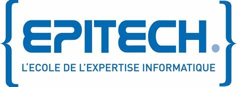

Votre vie numérique,
sécurisée et maîtrisée
SWA Tech accompagne particuliers, commerçants, associations et entreprises dans leur digitalisation et la sécurisation de leur vie numérique. Sites web professionnels, applications mobiles, audits de vulnérabilité, formation : une approche humaine et des tarifs accessibles.
SWA Tech est fait pour vous
Particuliers, commerçants, associations, TPE/PME : SWA Tech s'adapte à votre situation et à votre budget.
Vous êtes particulier
Vous voulez sécuriser vos comptes, comprendre les risques numériques ou créer votre première présence en ligne. SWA Tech vous accompagne avec pédagogie, sans jargon.
Protéger ma vie numériqueVous êtes commerçant, artisan ou association
Vous avez une activité mais pas de vraie présence en ligne. Vos clients cherchent sur Google et ne vous trouvent pas. SWA Tech crée votre site et le sécurise dès le départ.
Créer mon siteVous dirigez une TPE ou PME
Votre site existe mais il est vieillissant, peu sécurisé, ou vous n'avez aucune visibilité sur vos risques numériques. SWA Tech audite, sécurise et assure le suivi.
Auditer ma sécuritéVous êtes entrepreneur en Afrique francophone
Vous voulez digitaliser votre activité sérieusement, avec un accompagnement qui comprend votre contexte et votre budget. Priorité Mali et Afrique francophone.
Discutons de votre projetWeb, cybersécurité et accompagnement : tout en un
Plus besoin de jongler entre une agence web et un cabinet cybersécurité. SWA Tech assure les deux, avec une approche pédagogique.
Création de site web sécurisé
Du site vitrine au e-commerce, SWA Tech conçoit un site qui vous ressemble et inspire confiance à vos visiteurs. La sécurité est intégrée dès la première ligne de code.
- Design personnalisé et responsive
- HTTPS, headers de sécurité, OWASP dès le départ
- Mise en ligne + formation à la prise en main
- ✓ Audit de vulnérabilité inclus sans frais
Cybersécurité & audit
SWA Tech détecte les failles de votre site et de vos outils numériques avant que quelqu'un d'autre ne le fasse. Quatre niveaux d'accompagnement selon vos besoins.
- Diagnostic de vulnérabilités
- Rapport clair avec plan de remédiation priorisé
- Sécurisation complète et monitoring mensuel
- Accompagnement conformité : RGPD, NIS2, ISO 27001
Formation & sensibilisation
Vous voulez créer votre site en autonomie ou former vos équipes aux bons réflexes numériques ? SWA Tech forme en live, à votre rythme, sans jargon inutile.
- Formation site vitrine : 12h
- Formation e-commerce : 20h
- Sensibilisation cybersécurité (équipes)
- Présentiel Paris ou distanciel
Quatre niveaux de protection pour votre activité
Toutes les prestations sont réalisées sur devis, adapté au périmètre et aux besoins de chaque client.
Pack Diagnostic
Vous ne savez pas si votre site est sécurisé. Ce pack vous donne une photo claire de votre situation en 48 à 72h.
- Scan de vulnérabilités (Nmap, OWASP ZAP)
- Vérification HTTPS/TLS, headers, configurations
- Rapport avec risques classés par priorité
- Recommandations concrètes et actionnables
Pack Sécurisation
Diagnostic + correction des vulnérabilités critiques et moyennes. Votre site est sécurisé à la fin.
- Application des correctifs prioritaires
- Durcissement serveur et système d'exploitation
- Audit de configuration (Active Directory, cloud)
- MFA, mots de passe forts, sécurisation CMS
- Protection des données sensibles (RGPD)
Pack Monitoring
Votre site surveillé en continu. SWA Tech vous alerte si quelque chose ne va pas, vous dormez tranquille.
- Surveillance disponibilité et performances 24h/24
- Suivi certificats SSL et alertes d'expiration
- Détection d'anomalies et tentatives d'intrusion
- Rapport mensuel simplifié en langage clair
Pack Entreprise
Périmètre étendu (plusieurs sites, serveurs, messagerie) et accompagnement conformité complet sur plusieurs semaines. Méthodologie PECB.
- ISO/IEC 27001 (SMSI) : audit et accompagnement certification
- NIS2, RGPD, PCI-DSS selon le secteur
- Analyse des risques (EBIOS RM, ISO/IEC 27005)
- Politiques de sécurité (PSSI), PCA/PRA
- Interlocuteur dédié et points d'avancement réguliers
Pourquoi choisir SWA Tech ?
Ni le freelance sans garantie, ni le cabinet trop cher. Une double expertise certifiée, une approche humaine, à votre portée.
🔒 Security by Design
La cybersécurité n'est pas une option ajoutée à la fin. Elle est pensée dès la première ligne de code : HTTPS, headers de sécurité, OWASP, protection des données. Votre site est sécurisé avant d'être mis en ligne.
🎯 Audit de vulnérabilité inclus sans frais
Pour tout site ou application créé par SWA Tech, un audit de vulnérabilité et des tests de sécurité sont réalisés sans frais supplémentaires, avant chaque livraison. Une garantie unique sur le marché.
🧠 Double compétence GRC et technique
Conformité (RGPD, NIS2, ISO 27001) et technique (sécurisation, développement, SOC opérationnel). SWA Tech couvre toute la chaîne numérique : vous n'avez pas à coordonner plusieurs prestataires.
💶 Tarifs accessibles, qualité professionnelle
Les prix de SWA Tech sont pensés pour les particuliers, TPE, PME et associations qui veulent du professionnel sans les tarifs des grandes agences. Devis clair, sans surprise.
🌍 Positionnement France et Afrique francophone
Basée à Paris et au Mali, SWA Tech accompagne aussi les entrepreneurs en Afrique francophone, avec une approche qui comprend les réalités locales : budget, infrastructure, contexte numérique.
🤝 Accompagnement humain et durable
SWA Tech reste disponible après la livraison. Maintenance, questions, évolutions : vous n'êtes pas seul(e). Tout est expliqué clairement pour que vous gagniez en autonomie, pas en dépendance.
Une expertise certifiée
Les diplômes et certifications qui fondent la crédibilité de SWA Tech.

Architecture de Systèmes d'Information
Spécialisation Cybersécurité
Mathématiques et Informatique
Université Grenoble Alpes
5 étapes, de l'idée à la livraison
De votre premier message à la livraison, SWA Tech vous guide à chaque étape.
Échange découverte
30 min gratuit. On discute de votre projet, vos besoins et votre budget.
📅 RéserverDiagnostic & devis
Analyse de votre situation, devis détaillé avec planning et livrables clairs.
Réalisation
Points d'avancement réguliers. Acompte 40% au départ, solde à la livraison.
Livraison + formation
Remise des livrables et formation à la prise en main de votre site.
Ce que disent nos clients
Des avis vérifiés, publiés directement sur notre fiche Google Business.
SWA Tech a réalisé mon site FEIN avec beaucoup de professionnalisme. Équipe sérieuse, à l'écoute, réactive et compétente. Le résultat dépasse mes attentes. Je recommande fortement leurs services à toute personne souhaitant développer sa présence en ligne. Merci SWA Tech !
Une entreprise que je recommande fortement de part la compétence et la rigueur de ses professionnels.
Prêt(e) à lancer votre projet ?
Un appel de 30 min suffit pour clarifier votre besoin. C'est gratuit et sans engagement. SWA Tech répond rapidement.